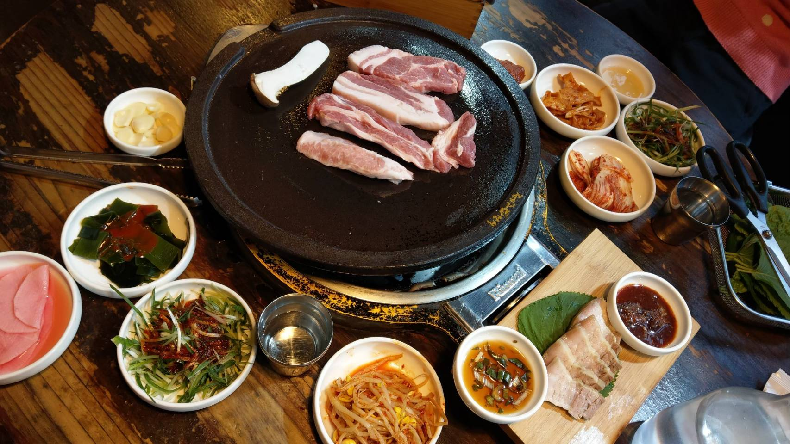

Special Experience
I would like to share one of my interesting travel experience here. In the winter vacation at 2019, I went to Korea with my sister. What made this travel special is that it was the first time I went abroad without joining a tourist group.
It was cold in Korea at that time, and even I saw snow. I observed a fun thing there on the street. That is, all Koreans wear long down jacket in the winter. And, my sister and I think it was interesting.
At the first day we went there, an accident happened. We could not find the hotel we booked. We went to the place located on Google Map, but there was no hotel nearby. Luckily, I’ve learned a little Korea, so I found that the map in that hotel’s website is different from Google Map. Finally, we found the correct place. My sister and I were nervous at that moment and it was quite a special experience I’ve never forgotten.

Though the accident shocked us, we still had a good time in Korea. The best thing I love in Korea is the food. There is various delicious food in Korea. I’d like to introduce three foods you must eat in Korea. First is Tteokbokki, spicy rice cake. The taste of Tteokbokki in Korea is different from the one I’ve ever tasted in Taiwan. The sauce is quite delicious and it is not very spicy but a little sweet. Second is roast pork belly. I am a person who hates fat. But, the taste of roast pork belly changed my thought on fat. You can try the roast pork with lettuce and it can lower the greasy taste. The last but the least, Fried chickens are the food you can’t pass. In addition to the delicious taste, the best part of fried chicken is that you only need to order it by phone, and the couriers will deliver fried chicken in front of your door. These three foods you must try if you travel to Korea.
我想要分享一個之前在韓國旅遊的經驗，2019年寒假和姊姊兩個人的韓國濟州行，這是我第一次的出國自助旅行。因為是冬天，韓國正在下雪，我意外發現了路上所有韓國人都有一個必備配件－長羽絨外套，算是一個有趣的街景。我們第一天一到韓國，在找預定好的旅館時，發生了一個小插曲，當我們抵達Google地圖顯示的位置，我們找不到預訂的那家旅館，在查了各種地圖後，終於發現官網地圖跟Google地圖顯示在不同的地址，幸運地，我們找到了! 這個經驗我大概永生難忘吧!
除了這個驚險的經驗，我玩得很開心，我最愛的莫過於韓國的食物，有三樣我覺得一定要吃的食物，第一，辣炒年糕，味道跟在台灣吃得不太一樣，反而比較不辣，醬汁甜甜的很好吃。第二，烤五花肉，雖然我很討厭吃肥肉，但是韓國的烤五花肉很好吃，如果真的不喜歡肥肉也可以嘗試用生菜包烤五花肉，可以中和油膩感。最後，就是韓式炸雞，除了好吃以外，最棒的是可以外送，只需要用手機下訂，外送員會把炸雞送到房間門口，而且，味道真的很棒，推薦以上三個美食給來韓國旅遊的人。